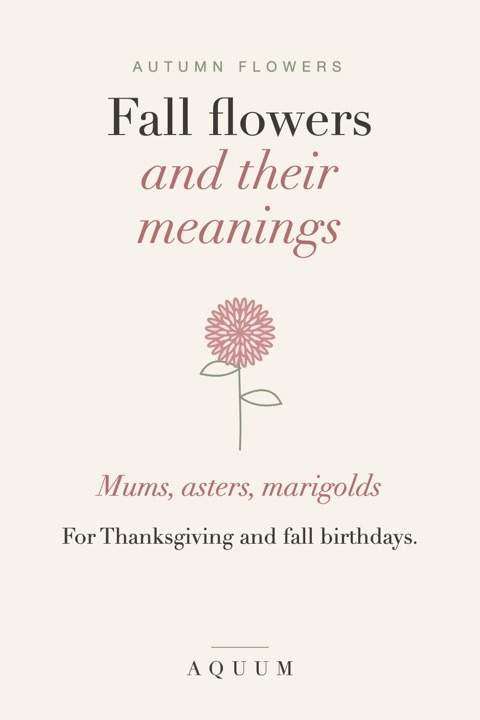

Fall Flowers and Their Meanings: For Thanksgiving and Autumn Birthdays
2026-10-03
Written by the team behind Aquum, a small birth flower gift shop. How we make money.

Autumn has its own flowers: warm, sturdy, a little wild. Three of them are birth flowers (the aster for September, the marigold for October, the chrysanthemum for November), so if you know someone with a fall birthday, these are the flowers that already belong to them.
Here's what the classic fall flowers mean, and how to use them on a Thanksgiving table or in an autumn birthday gift.
Chrysanthemum: honest friendship and long life
The chrysanthemum is November's birth flower and the queen of fall gardens. In China and Japan it has stood for long life and good fortune for centuries; Japan's imperial seal is a stylized chrysanthemum. In much of the English-speaking world it means friendship and cheerfulness, which makes a pot of mums one of the best hostess gifts there is.
One caution: in parts of Europe, white chrysanthemums are funeral flowers. For a gift, choose yellow, orange, rust or pink. More in our November birth flower guide and our guide to what each flower color means.
Aster: wisdom and patience
The aster is September's birth flower. Its name is Greek for "star", for the shape of its petals around a golden center. Asters bloom late, when most of the garden has finished, which is part of why they stand for patience and wisdom. See the September birth flower guide.
Marigold: warmth that stays
The marigold is October's birth flower, bright orange and gold. In Mexico, marigolds (cempasúchil) cover the altars of the Day of the Dead on November 1 and 2, their color and scent said to guide the spirits home. That gives the flower a double meaning: warmth and remembrance. The October birth flower guide has the full story.
Cosmos: order and peace
The cosmos is October's second birth flower. Its name comes from the Greek kosmos, meaning order and harmony, which Spanish priests in Mexico supposedly saw in its evenly spaced petals. It blooms right up until the first frost. Read more about the cosmos birth flower.
Sunflower: adoration and loyalty
Sunflowers follow the sun while they're young, turning from east to west through the day, so they've come to mean loyalty and adoration. Native to the Americas, they were grown by Indigenous peoples for thousands of years before reaching Europe. Late-summer and early-fall sunflowers are a natural centerpiece for Thanksgiving.
Dahlia: commitment and grace
Dahlias come from the mountains of Mexico and Central America, and the dahlia is Mexico's national flower. They bloom from late summer until frost in every color but true blue. In the language of flowers they stand for commitment, dignity and grace: a good choice for an anniversary in the fall.
Goldenrod and black-eyed Susan: encouragement
Two wildflowers that turn roadsides yellow in September and October. Goldenrod is the state flower of Kentucky and Nebraska; the black-eyed Susan is the state flower of Maryland. Both are read as encouragement: the flower to give someone starting something hard. And no, goldenrod doesn't cause hay fever: its pollen is heavy and carried by insects; ragweed, which blooms at the same time, is the real culprit.
Fall flowers by meaning, at a glance
| Flower | Meaning | Good for |
|---|---|---|
| Chrysanthemum | Honest friendship, long life | Thanksgiving hosts, November birthdays |
| Aster | Wisdom, patience | September birthdays, teachers |
| Marigold | Warmth, remembrance | October birthdays, remembering someone |
| Cosmos | Order, peace | October birthdays, a new home |
| Sunflower | Adoration, loyalty | Friends, family, a Thanksgiving table |
| Dahlia | Commitment, grace | Fall anniversaries |
| Goldenrod | Encouragement | Someone starting something new |
| Black-eyed Susan | Encouragement, justice | Graduates, new jobs |
For the Thanksgiving table
- Centerpiece: low arrangements of mums, dahlias and sunflowers, short enough that people can see each other across the table.
- Place cards with meaning: give each guest their own birth flower. Our free printable place cards have all twelve months, with a line for the name.
- A hostess gift: a potted chrysanthemum, the flower of honest friendship, says thank you for having us. More ideas in our Thanksgiving hostess gift guide.
For autumn birthdays
If they were born in September, October or November, their birth flower is already in season. A bunch of asters, marigolds or mums, with a card that explains what it means, turns a simple bouquet into a personal gift. Our free birthday cards have every month's flower, and here's what to write inside.
Want to know what other flowers mean? See flower meanings from A to Z, or the Christmas flowers for the next season.